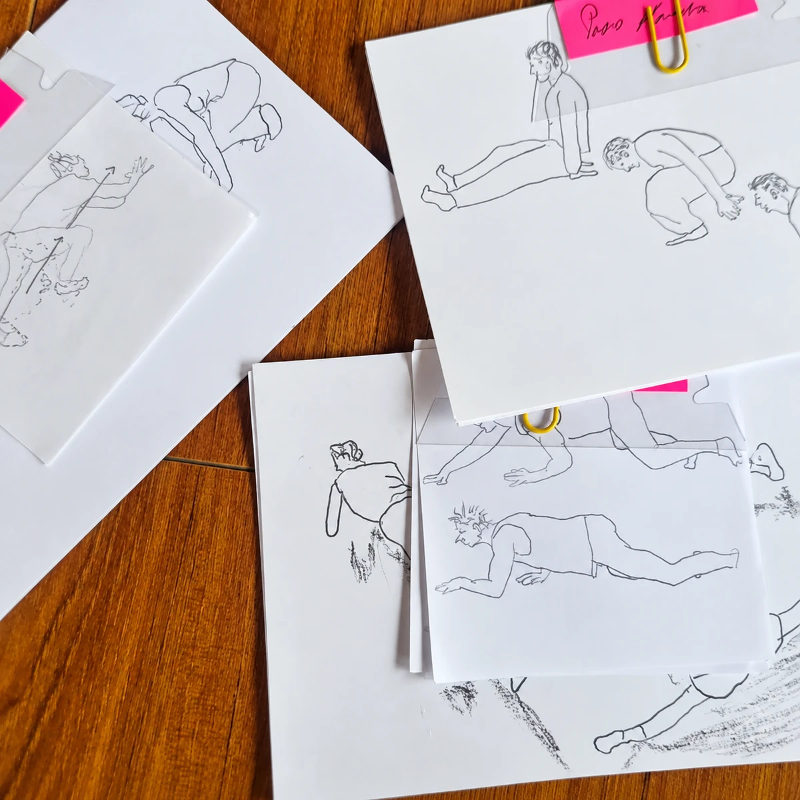
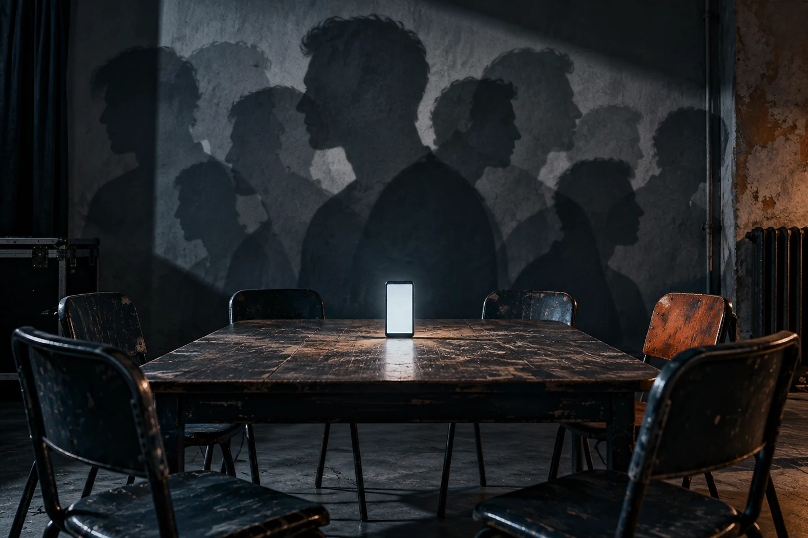

Entrenamiento e investigación escénica
Portulanos
Entrar a una sala a entrenar: ¿qué haces?
Explorar PortulanosExperimentos, exploraciones
y preguntas como brújulas

Entrenamiento e investigación escénica
Entrar a una sala a entrenar: ¿qué haces?
Explorar Portulanos

Investigación–creación
Movimientos reaccionarios, nuevas derechas, masculinidades y machosfera.
Explorar EmergenciaNavegar el mapa de lo posible.
Conocer La Gruta →